| 日付 | 2009年4月29日（水） |
|---|---|
| 山域 | 箱根 |
| メンバー | グループ（男4女4） |
| 山行形態 | 日帰り |
| アクセス | 電車、バス |
| ルート (Map) | 矢倉沢→矢倉岳→足柄峠→足柄駅 |
GWは長期縦走に出かける予定なので、その直前の休日は軽めの登山にする。
行先は箱根の北にある矢倉岳だ。
9:14 矢倉沢バス停到着。標高260m。
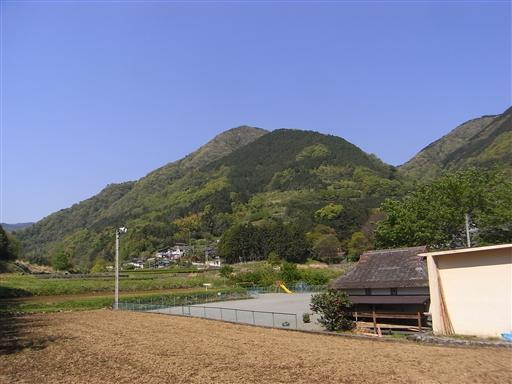
登山道入口までの民家の壁に「←矢倉岳ハイキングコース」と大きく書かれていた。
ボランティアで書いているのだろうか？
そして小さく「写真撮影はご遠慮ください」と書かれていた。
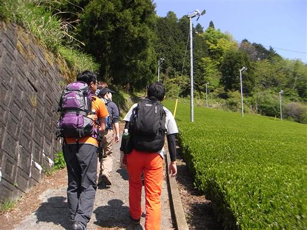
箱根の西側1/3は静岡県。
ここは神奈川県だが静岡県に近いこともあり、お茶の栽培が行われている。
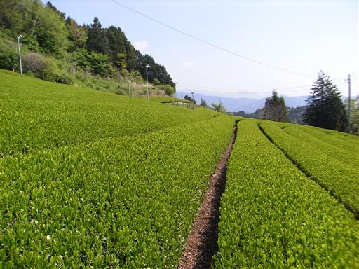
道端にシャガの花が咲いている。
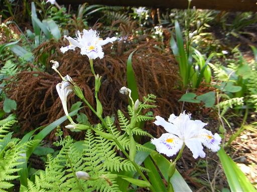
今日は天気がよいが、あまり人は歩いておらず比較的静かな登山道だ。
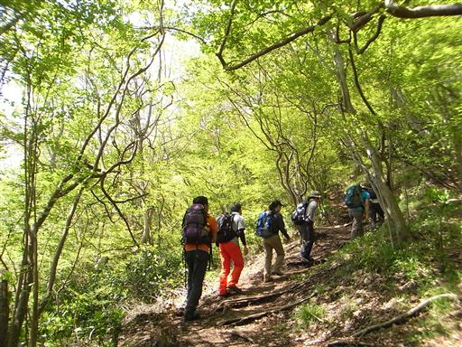
10:50 矢倉岳山頂到着。標高870m。
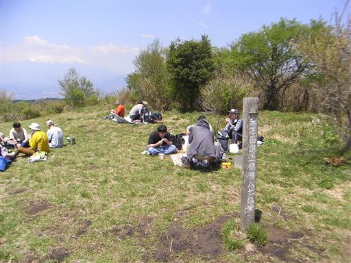
草原に覆われた山頂は素晴らしい展望が広がっている。
南方には明神ヶ岳を始めとする箱根の山々が見渡せる。
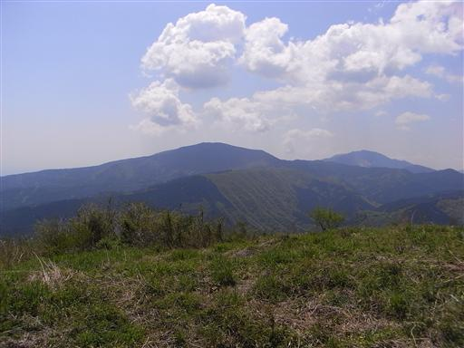
その右にひときわ高く聳えるのは金時山だ。
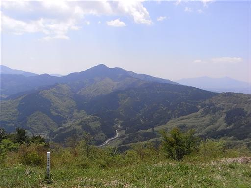
西に聳える富士山は、残念ながら頭が雲に隠れてしまっている。
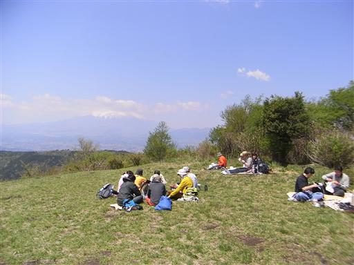
山頂の展望は素晴らしいが、側に小さな展望台が設置されている。
あまり役に立つ展望台ではないが、子供の良い遊び場になっている。
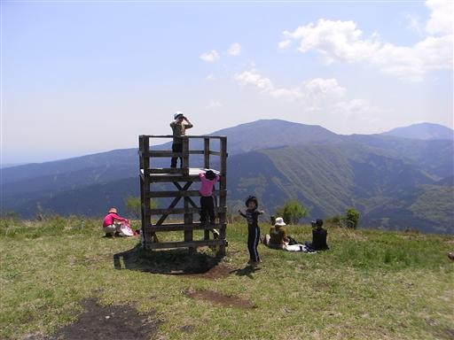
矢倉岳を下山し、展望の良い道を歩いて足柄峠に向かう。
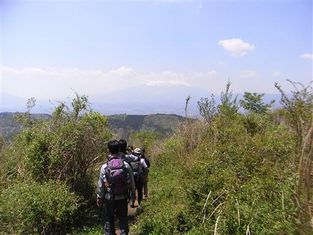
クサボケの赤い花。
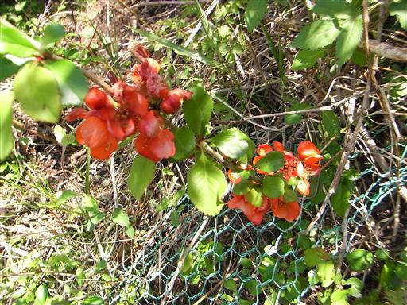
野山に咲く花はよく似た種類の花が多く、図鑑を見ながらでないと同定をするのは難しい。
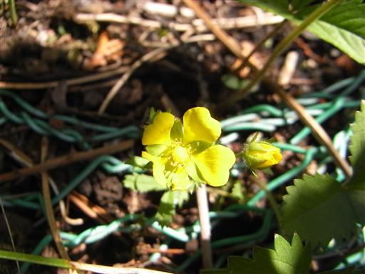
クサイチゴの花。実はあまり美味しくないらしい。
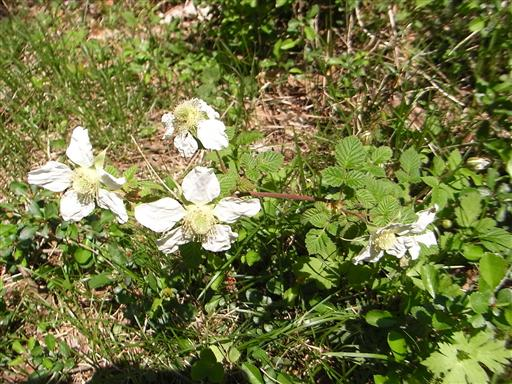
赤い花のつぼみがたくさんできている。ツツジ系の花だ。
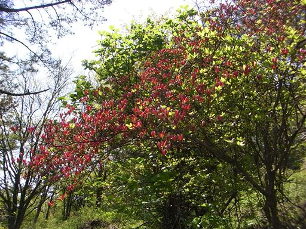
タツナミソウ。紫色の花を咲かせる。
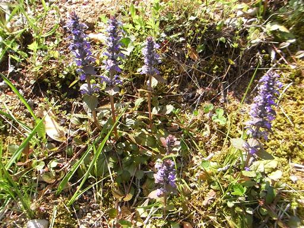
登山道脇には東屋が建っている。この辺りは人通りが多い。
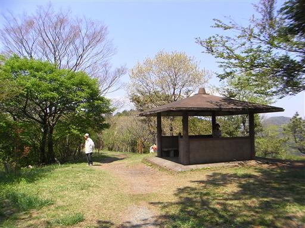
しばらく歩くと車道に下り立つ。足柄峠までは車道が伸びている。
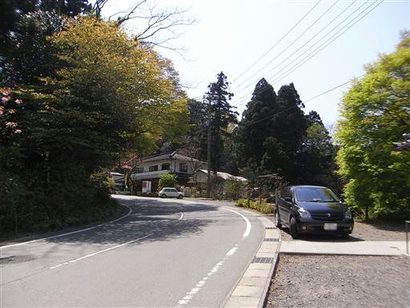
足柄峠に到着。ここは平安時代に箱根を越える官道だった。
日本武尊がここで「あづまはや（我が妻よ）」と叫んだという言い伝えがある。
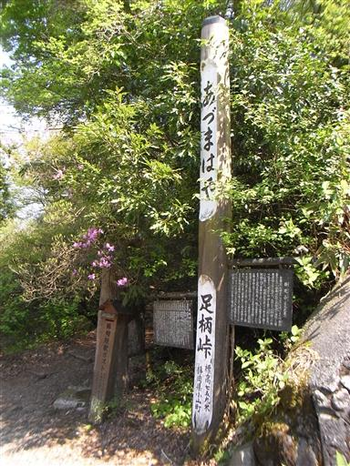
ここは交通の要衝の為、関所が設けられた。今ある門は後世造られたものだ。
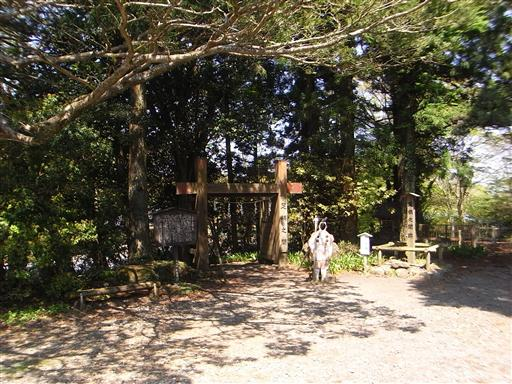
峠の側に足柄山聖天堂が建てられている。
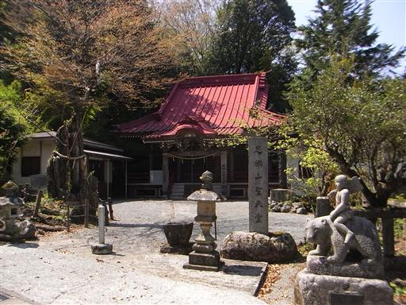
ここは金太郎ゆかりの地でもあり、金太郎の石像が置かれている。
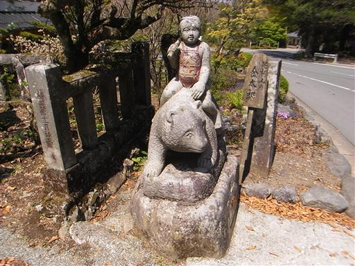
歴史ある峠を越えて、歴史ある足柄古道を歩いていく。
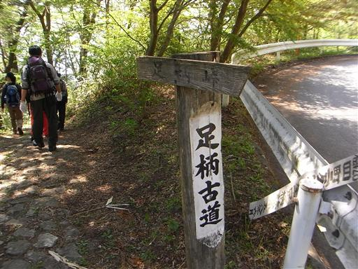
緑色に染まった水たまり。細かな葉がたくさん浮いている。
遠くから見るとなかなかきれいだが…
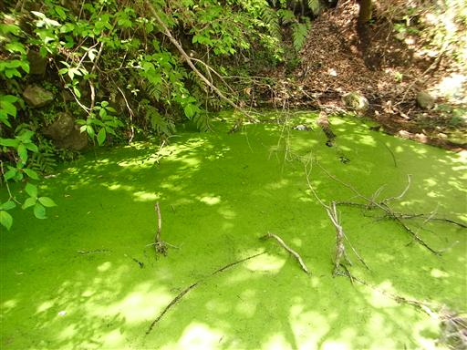
道は途中から植林地帯になるが、側には沢が流れていて気持ちが良い。
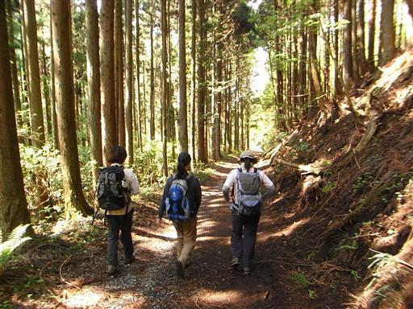
14:29 足柄駅到着。標高330m。
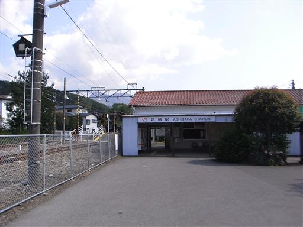